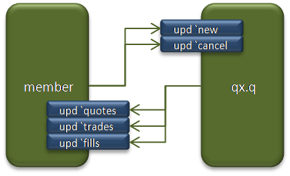
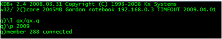
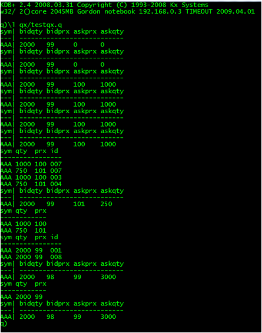

This series looks at building a near full-scale application in q and, in the process, tries to answer questions on the amount of code a q application requires, and how that code can be organised so that it is both comprehensible and straightforward to change. The target application is a participation strategy and some of its associated testing framework.
The series starts with developing a simple exchange on which the strategy can be tested. Next in this series: a qx market maker.
The exchange only exists for testing strategies so, initially at least, qx is a very basic execution venue. The only order types and times-in-force are good for day limit orders and IOCs. There are no defined trading sessions, no auctions, no order amendments (only cancellations) and no validation. Could the exchange be combined with the strategy scripts for testing? The difficulty is managing feedback within the single thread of execution; with q there is no concept of creating another thread to process something. Instead, the language forces you to think about things as distinct processes.
Communication in the kdb+tick product is via callbacks on the upd function, amongst others. Following the principle of least surprise, the exchange and its members should do likewise. Members, the strategies, notify the exchange of new orders and cancellations through remotely invoking an upd function in qx. The exchange notifies of quote changes, trades and order fills in a similar way.

All the remote calls are asynchronous. The definition of upd is similar to that in kdb+tick:
upd: {[t; x] if [count x; .process.upd [t; x]];}
.process.upd: () ! ()
The difference is that upd delegates to a dictionary of functions in the process namespace. The parameters follow the same convention as kdb+tick: t is the name of the table and x is a table. Note that delegation only happens if there are rows in the table. Note also that indexing a dictionary on an absent key results in null: calling upd with an undefined table name results in no-operation rather than an error.
Because upd is such a good dispatching pattern, it forms the basis for internal as well as external communication within qx. The tables named in calls more often do not exist as predefined q tables: the pattern looks similar to publish-subscribe, with the "table name" becoming the topic.
The core definition of upd. | process.q | |
| The qx exchange. | qx.q | |
| A template implementation of the interface for exchange members. | member.q | |
| A simple qx membership test. | testqx.q | |
| Refactors from subsequent articles | ||
The .util context. | util.q | |
The shared schema, in the .schema context. | schema.q |
qx has three pre-defined tables: orders, matched and quotes. The orders table contains all order book orders. Price priority is decided when matching: time priority is ensured through appending to the table (q sorts are stable). The who column shows which member entered the order: the membership number is simply the connection handle assigned to the socket by q. The matched table is used while matching and is otherwise empty; quotes contains the current quote for each symbol mentioned in orders.
The membership interface functions, upd for names new and cancel update these tables. Note that there are no "tables" named new or cancel.
Two of the built-in q functions are redefined to keep track of members through their connection handles. Functions .z.po and .z.pc are invoked when ports onto qx are opened and closed respectively: the current list of members is kept as a global variable. The market tick data, quotes and trades, is published to all currently connected members.
The publication of tick data and fills is also done through the upd function: the names used are capitalised as a reminder that these are for internal use (q tends to be written in lower case only).
The qx functions operate on whole tables or lists in preference to individual atoms. The SQL-like operations tend to be easier to understand and vector operations are faster than writing your own loops. Where rows need to be handled one at a time, the each verb is used to iterate: this keeps the overall style biased towards the declarative rather than the procedural.
Dictionaries of functions are used often to replace if [...] statements on enumerated data. For example:
.qx.matchable: () ! ()
.qx.matchable [`BUY]: {[t; x] `prx xasc select from t where dir = `SELL, x [`prx] >= prx}
.qx.matchable [`SELL]: {[t; x] `prx xdesc select from t where dir = `BUY, x [`prx] <= prx}
See also the definitions of new and label.
Load qx.q and then testqx.q into separate q sessions. You should see the following:


| 1. | www.kx.com | |
| 2. | Further updates, and more q code, can be found at code.kx.com. This is a secure site: for browsing the user name is anonymous with password anonymous. |